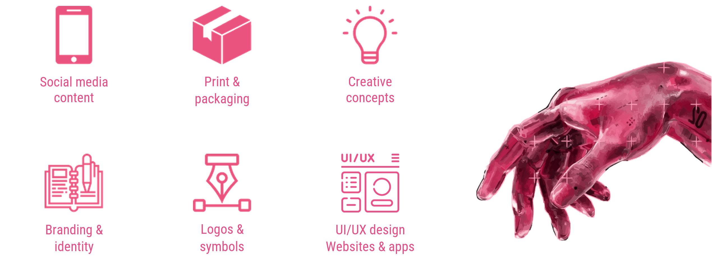

Graphic designer · BeePro
Product cards for a website.
 IDEAS WITH
IDEAS WITHGRAPHIC | MULTIDISCIPLINARY DESIGNER
Turning ideas into visual stories.
Design with character. No boring solutions.

Welcome, I am SoulArt / KRTY || Maria 👋
I work in design, create all kinds of things and refine every project into something beautiful. If you're looking for visuals that are stylish, polished and eye-catching, you're in the right place.
Based in Russia and designing since 2022. I develop my skills through personal and academic projects and welcome creative collaborations.
I am drawn to bold ideas, expressive typography and illustrations with personality. I love combining a clear system with a lively, slightly rebellious aesthetic.

| Visual foundations | Creative practice |
|---|---|
| Composition & visual hierarchy | Reference research & moodboards |
| Typography | Poster & banner design |
| Color correction & color harmony | Visual identities & logos |
| Layout & grid systems | Product cards, covers & social media graphics |
Russian — Native
English — Basic
Product cards for a website.
Event and portrait photography.
Cards and visual materials.
Graphic Design
Composition, typography, color, visual identity and digital design. Practical work and contemporary design approaches.
still learning. one mind.
one mind.RE: FORM is not a team in the traditional sense. It is my personal project, where I am the designer, developer, manager and creative driving force all at once.
A personal project created and developed by one person.
From concept and design to writing code and testing.
I bring design and programming together in one process. I do not have to wait for a developer or a designer — I do everything myself. AI (vibe coding) helps me speed up routine tasks, generate code and debug it. This enables one person to create fully functional applications.
Decisions are made instantly, without approval chains.
Design and code work together — they are created by the same person.
I can change the direction of a project on the fly.
Every project is my vision from beginning to end.
An intelligent life-planning ecosystem with the AI assistant EVE.
Discuss the project ↗
Your path to intentional change.
Design. Code. AI. All in one.
One idea. One person. One product.
Have a brand, publication or visual project in mind? Tell me about it.
Ideas. Design. A little magic.
“Above all, live! Do not live only for grades, a salary or approval. Live so that every night you can say: Yes, today was great!”